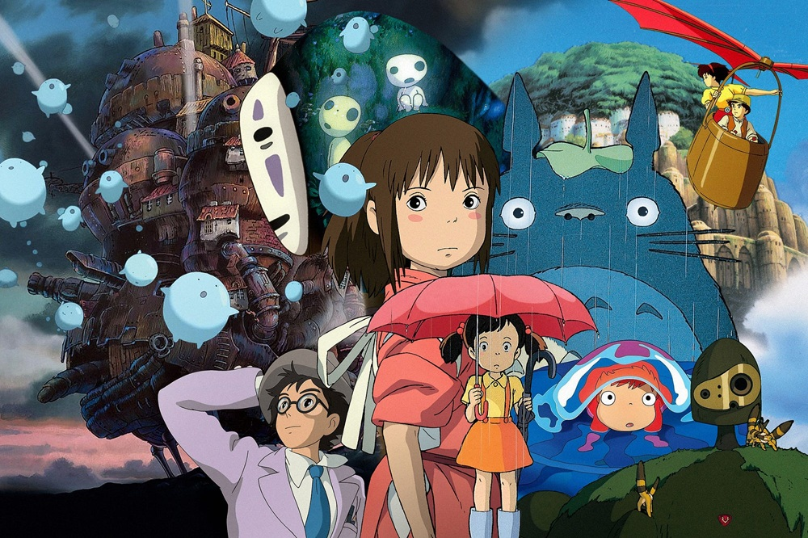

The Powerhouses Behind the Art
While directors and voice actors often get much of the credit, the animation studio itself plays a crucial role in defining the final look, feel, and quality of an anime. Each studio has its own unique culture, artistic philosophy, and strengths. Some are known for breathtaking, movie-quality visuals, while others are famous for their fluid action sequences or deeply emotional storytelling. Understanding which studio is behind a project can often give you a good idea of what to expect before you even watch the first episode.
Studio Comparison Table
| Studio Name | Founded | Famous Works | Known For |
|---|---|---|---|
| Studio Ghibli | 1985 | Spirited Away, My Neighbor Totoro | Magical realism, lush traditional hand-drawn animation, and emotionally resonant films. |
| MAPPA | 2011 | Jujutsu Kaisen, Attack on Titan (S4) | High-budget, visually spectacular action sequences and taking on highly ambitious projects. |
| Kyoto Animation | 1981 | Violet Evergarden, A Silent Voice | Incredible attention to detail, beautiful character animation, and deeply moving dramas. |
| Madhouse | 1972 | Death Note, Hunter x Hunter (2011) | Versatility across many dark and mature genres, consistently high-quality adaptations. |